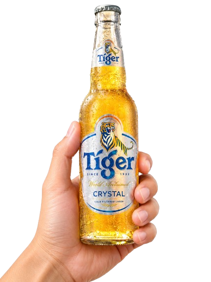
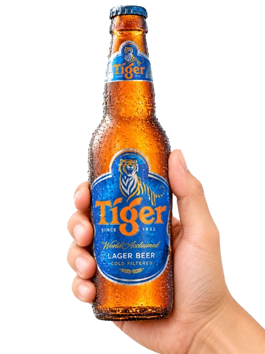

ត្រៀមរៀបចំព្រឹត្តិការណ៍ "អង្គរសង្ក្រាន្ត" ដ៏ធំសម្បើមនៅខេត្តសៀមរាប ដើម្បីអបអរសាទរបុណ្យចូលឆ្នាំថ្មី

ខេត្តសៀមរាប៖ អាជ្ញាធរខេត្តសៀមរាបបានប្រកាសថា ត្រៀមខ្លួនរួចជាស្រេចក្នុងការរៀបចំព្រឹត្តិការណ៍ "អង្គរសង្ក្រាន្ត" ឆ្នាំ២០២៦ ខាងមុខនេះ។ ព្រឹត្តិការណ៍នេះនឹងនាំមកនូវការបង្ហាញវប្បធម៌ខ្មែរដ៏សម្បូរបែប ល្បែងប្រជាប្រិយ និងការប្រគំតន្ត្រីខ្នាតធំដើម្បីទទួលស្វាគមន៍ភ្ញៀវទេសចរជាតិ និងអន្តរជាតិ។
លោកអភិបាលខេត្តបានបញ្ជាក់ថា ការរៀបចំនៅឆ្នាំនេះនឹងមានភាពខុសប្លែកពីឆ្នាំមុនៗ ដោយមានការបន្ថែមនូវតំបន់កម្សាន្តថ្មីៗ និងការតាំងពិព័រណ៍ផលិតផលក្នុងស្រុកមកពីគ្រប់ខេត្តក្រុង។ នេះគឺជាឱកាសដ៏ល្អក្នុងការបង្ហាញពីសន្តិភាព និងការរីកចម្រើននៃវិស័យទេសចរណ៍នៅក្នុងតំបន់សៀមរាបអង្គរ។



.png)
.png)
.png)
ទន្ទឹមនឹងនេះដែរ កម្លាំងសមត្ថកិច្ចគ្រប់លំដាប់ថ្នាក់បានត្រៀមលក្ខណៈរួចជាស្រេច ដើម្បីការពារសន្តិសុខ និងសណ្តាប់ធ្នាប់ជូនបងប្អូនប្រជាពលរដ្ឋ។ អាជ្ញាធរក៏បានអំពាវនាវដល់ម្ចាស់អាជីវកម្មសេវាកម្មទេសចរណ៍ទាំងអស់ កុំឲ្យមានការដំឡើងថ្លៃហួសហេតុក្នុងអំឡុងពេលបុណ្យប្រពៃណីជាតិនេះ។
គួរបញ្ជាក់ផងដែរថា ព្រឹត្តិការណ៍អង្គរសង្ក្រាន្តមិនត្រឹមតែជាការសប្បាយរីករាយប៉ុណ្ណោះទេ ប៉ុន្តែវាក៏ជាការរួមចំណែកយ៉ាងសំខាន់ក្នុងការថែរក្សា និងលើកកម្ពស់មរតកវប្បធម៌ដូនតាខ្មែរឲ្យកាន់តែល្បីល្បាញលើឆាកអន្តរជាតិ។